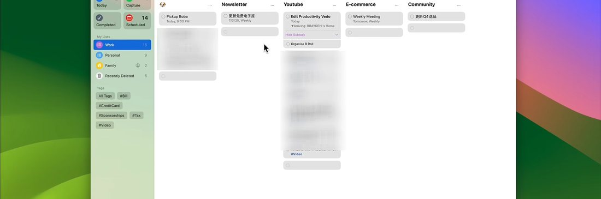
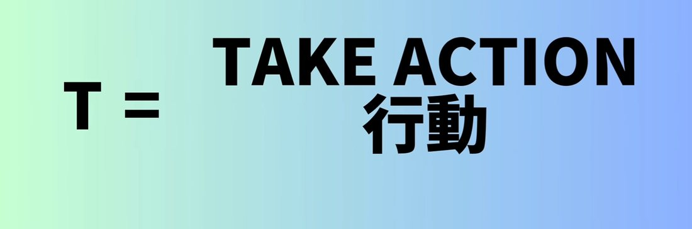
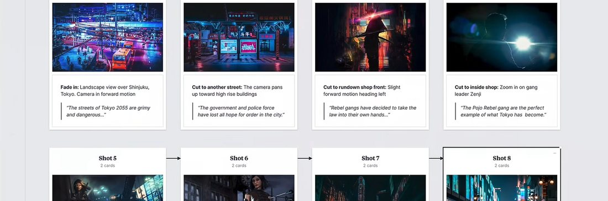
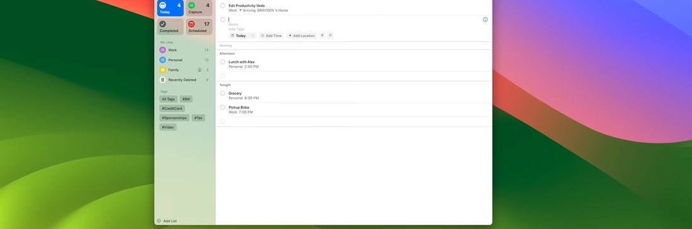
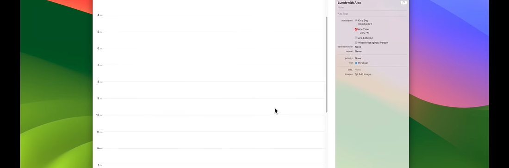
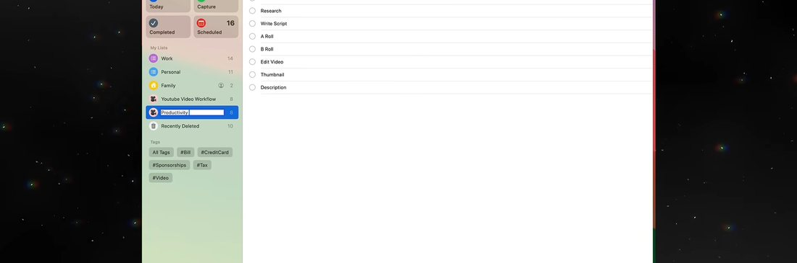
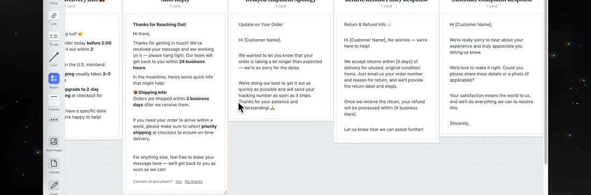

一个人同时做 YouTube、电商、电子报、付费社群和宠物保姆五摊事，靠的不是更复杂的工具，而是四步固定动作：Capture 捕捉、Organize 整理、Take Action 行动、Remind 提醒。作者说这套系统全部用免费工具搭出来，每天只打开一张「今日清单」。

适合谁：手上同时有 2 个以上项目、靠备忘录和脑记推进的人。作者的前提很明确：工具不是重点，能不能持续才是00:01:22。
不适合谁：需要多人审批、甘特图排期的团队项目。这套是个人系统，团队协作只覆盖到「每个人一块板」的程度00:09:18。
视频里没说：每个项目的具体收入、每周总工时、以及 Milanote 付费版和免费版的差别。作者只说免费版「基本功能都够用」00:03:29。
作者把自己的系统叫 COTR：Capture 捕捉、Organize 整理、Take Action 行动、Remind 提醒00:01:46。四步各对应一个动作和一个工具，不要一开始就想搭「完美工作台」。
她试过 Notion，花一整天搭出带看板、时间追踪、目标设定、心情记录的完整空间，结果坚持不下去——「太复杂、太花时间、太难持续」00:01:03。这是这套系统要解决的问题。

顺序不要颠倒：先保证「什么都记下来」，再谈分类，最后才是排期。作者的说法是，大脑不是仓库，是处理器00:02:51。
| 环节 | 用什么 | 视频里的理由 |
|---|---|---|
| Capture 捕捉 | iPhone 备忘录 + Action Button | 系统自带、零成本；Action Button 直接唤起语音记录，遛狗单手也能记00:02:01 |
| Organize 整理 | Milanote | 可视化像贴便利贴；免费版够用；比 Notion 简单；协作与分享免费00:03:29 |
| Take Action 行动 | Apple 提醒事项 | 位置提醒、时间提醒、Siri 语音添加、界面简单00:05:10 |
| Remind 提醒 | Apple 日历 | 把备忘录的截止日、提醒事项、邮件会议、短信约会汇总到一处00:06:11 |
| 不要用 | 复杂看板类工具 | 作者花了整整一天搭 Notion，最后放弃：记录时还要想「放哪个板块」00:01:03 |
「你一看就懂、不需要看教程」——功能越多越容易分心，这是作者放弃 Notion、改用系统自带应用的原因00:05:32。
所有想法先丢进 iPhone 备忘录，不分类、不排版00:03:12。作者还设了一个更省事的入口：把 Action Button 绑成「打开 ChatGPT」，按住就能语音说，遛狗时一只手也能记00:02:16。
这一步唯一的 KPI 是「记下来」。作者用自己走路摔倒举例：脑子里同时装着下一条视频、下一期电子报、要回的邮件，结果连眼前的路都没注意00:02:34。
固定动作是周日晚上花一小时，把一周捕捉到的碎片按项目分到 Milanote 的板块里00:03:12。她的板块就是五个项目加一个生活区：YouTube、电商、Newsletter、社群、宠物保姆、个人生活00:04:10。

作者特别提醒：很多人在这一步放弃，因为想一次做到完美。她的口径是「完成比完美更重要」，分类只要自己看得懂，不必像图书馆索引00:04:31。
她选 Milanote 用了五六年，团队也在用00:03:29。免费版就能满足个人和小组的基本协作。
每天的清单只有三层：1–2 个需要深度专注的大任务、3–5 个能快速清掉的小任务、外加回复邮件和社群互动这类日常维护00:05:53。早上打开只看「今天」这一个视图。

她常用三个功能：到某地提醒（位置提醒）、按时间段推送（早上推脚本类工作）、以及用 Siri 直接加任务00:05:10。任务不写进「今天」，就等于不存在——这是这一步的隐含规则。
日历不是用来重复列任务的，而是把「有明确时间」的东西收拢：备忘录里的截止日、提醒事项、邮件里的会议邀请、短信里的约会00:06:11。作者说打开日历就能看到今天要完成什么、周末约了谁、下个月要注意什么00:06:28。

每周更新一期，从灵感到发布约 5 天00:06:47。灵感进备忘录；写脚本时先把大纲丢进自制的「脚本 GPT」出框架，再用 Claude 打磨结构和长文，作者说 Claude 能写 5,000–6,000 字以上，ChatGPT 偏短00:07:25；成稿里再补个人经历和口语风格00:08:02。拍 A-roll、补 B-roll、剪辑、上传，封面在 Canva 做，标题和描述模板放在 Milanote00:08:40。

团队共用 Milanote，分三块：定制订单、客服问题（含常见问题与 SOP）、内容素材（图片和文案放 Canva 或 Google Drive，链接汇总到 Milanote）00:09:18。四条规则：每个任务有明确负责人、有明确截止时间、完成后移到已完成区、遇到问题立刻在任务下留言00:09:58。

每天花 15 分钟刷 Product Hunt 的新品，自己试用过再决定是做成视频还是写进电子报00:10:38；另外关注几个 AI 工具聚合站，泡澡时刷 X 上的推荐，看到就记进备忘录00:10:55。
社群每天 30 分钟答疑、每天发一个帖子00:11:15。宠物保姆用日历管预约，用 Milanote 建一份「狗狗 CRM」，记录精力水平、是否要喂药、每天遛几次，每次服务配一张标准检查清单00:11:34。
作者的原话是「比时间管理更重要的是能量管理」00:12:14。她的一天分四段：
| 时段 | 干什么 | 为什么 |
|---|---|---|
| 6:00–12:00 | 写脚本、构思内容 | 执行力最强，留给需要动脑的事00:12:14 |
| 13:00–15:00 | 拍摄 | 这段时间光线好00:12:38 |
| 15:00–17:00 | 回邮件、社群互动 | 沟通类任务，不需要深度专注00:12:38 |
| 18:00 之后 | 陪狗狗客户玩等轻任务 | 只做不用动脑的事00:13:00 |
配套两个动作：一是让项目之间互相供给素材，视频精华剪成社媒内容、电子报的工具推荐变成视频选题、电商经验变成视频内容00:13:21；二是批量处理同类任务，所有社群回复、所有邮件集中在固定时段做00:13:21。
| 坑 | 视频里的证据 | 怎么避 |
|---|---|---|
| 先搭工具再想流程 | 花一整天搭 Notion，最后放弃00:01:03 | 先用系统自带应用跑两周，跑不动再换工具 |
| 分类要做到完美 | 「很多人在这一步就放弃」00:04:10 | 板块按项目分，够自己看懂就行 |
| 今日清单列十几条 | 她的清单固定 1–2 大 + 3–5 小00:05:32 | 超出的任务挪到别的日子，不要留在今天 |
| 团队任务没有主责人 | 四条规则第一条就是「每个任务有明确负责人」00:09:58 | 卡片上写人名和截止日，缺一个就不算建好 |
| 把时间排满却不管精力 | 她按 6–12、13–15、15–17 分段安排00:12:14 | 先记录一周自己的精力曲线，再排难任务 |